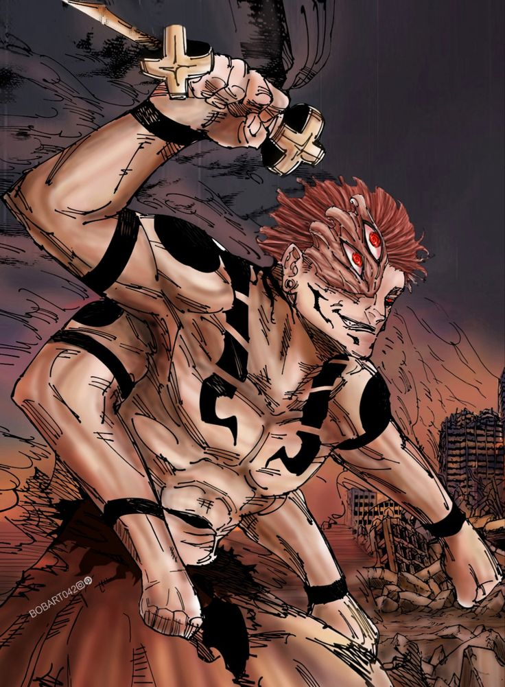

Após o revés no Jogo, Sukuna concentra-se em Shibuya, onde detecta a libertação do formidável Shikigami, General Mahoraga. Engajando em um combate astuto, ele ergue um Santuário Malévolo, empregando cortes e chamas enigmáticas. O poderoso Mahoraga, incapaz de resistir, sucumbe às sombras.
Sukuna, dentro do corpo de Fushiguro, acelera o processo de domínio dos Shikigami. Com astúcia, ele subjuga todos, incluindo o implacável General Mahoraga, fortalecendo Fushiguro com novas habilidades e técnicas reversas amaldiçoadas.
Após minuciosa preparação, Sukuna enfrenta Gojo Satoru em um duelo intenso, um dos melhores de Jujutsu Kaisen. Utilizando estratégias astutas, Sukuna supera o Vazio Infinito de Gojo. Mesmo diante dos ajustes na barreira de Gojo, Sukuna mantém a vantagem, forçando Fushiguro a suportar o impacto do ataque vitorioso com determinação impressionante.
Desconsiderando a queda de Mahoraga, Sukuna transcende o Infinity de Gojo, atacando-o diretamente em seu ponto vulnerável. Demonstrando astúcia, ele recria o golpe mortal, aniquilando Gojo Satoru de uma vez por todas, revelando sua superioridade estratégica no confronto decisivo.
Em Jujutsu Kaisen, Sukuna demonstra controle excepcional sobre sua reencarnação, transferindo-se entre diferentes anfitriões e recuperando sua forma completa. Após a vitória sobre Gojo, ele se regenera completamente, redefinindo todas as feridas e fadiga, consolidando sua posição como o Rei das Maldições invencível.
Todos os Direitos Reservados © - Mauricio Silva de Souza e Sabrina Teixeira de Araujo